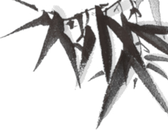
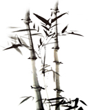

个人简介Personal introduction
1963年生于湖北，童年和少年生活在湖北省荆州市。
现为荆州美术家协会会员；任职荆州美术家协会副秘书长，成功协助办理书法字画展览活动多次。
工作期间从事质量管理工作，技术职称：经济师。湖北省进出口商检局认可检验员。
曾任职荆州职业技术学校校长。
2009年-2014年出门游历，体验保洁人员、服务员、前台文员以及充满神秘色彩的私家侦探的喜怒哀乐。
2014年-2016年这时期的创作主要是工笔作品，曾得到荆州著名画家蔡大秀女士的指教，在颜色的使用上追求色彩的纯粹性，如：红色、蓝色、紫色等，在画面中
追求自然形态的组合与抒情性的结合。之后，又系统的研习了中国画的传统理论与技法，主要是山水，人物，从中深刻领悟国画的精神与精华，结合作为现代人多元化的审美要
求，认为在继承传统的同时，表现内容与形式应该具备现代的审美因素，笔墨当随时代，在此方面得到了绘画大师姚君正先生的指教并且受其影响较大。
从2014年至今主要集中在学习以表现仕女为题材的写实作品上，其主要作品《嫣姿》入选“庆祝建党95周年暨长征胜利80周年”荆州市美术作品展，获优秀作品奖；《梅兰竹菊》入选“荆州画家学术年展”，获优秀作品奖。
其作品《群芳图》《鹦鹉》发表在《荆州美术家》一书中，于2016年出版。

